Free
powerpoint
Tutorials
|
Free
powerpoint
Tutorials
|
|
 home home |
Stay at Home and Learn | ||||
How to set up a Master Slide in PowerPoint |
|||||
|
Part 1, 2, 3, 4, 5, 6, 7, 8, 9, 10, 11
A Master Slide is a template that is used for the other slides in the presentation. You can set fonts, colours, textboxes, bullets, and footers. Once the Master Slide is set up, each time you insert a new slide, it will have the same formatting as your Maser Slide. That way, you don't have to keep formatting every slide. So open PowerPoint and, if you have PowerPoint 2000, you'll see a dialogue box appear. (For PowerPoint 2003 users, select Blank Presentation from the Task Pane on the right hand side. If you can't see a Task Pane, Click View > Toolbars > Task Pane.) Here's the image for PowerPoint 2000: 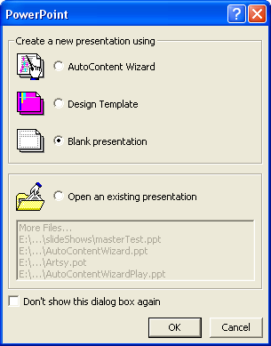 (If you already have PowerPoint open, click File > New. From the dialogue box that appears, choose "Blank presentation") And here's the image for PowerPoint 2003: 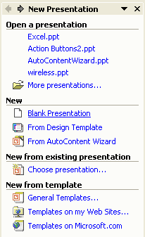 When you click on "Blank presentation" in PowerPoint 2000, you'll see another dialogue box appear. This one: 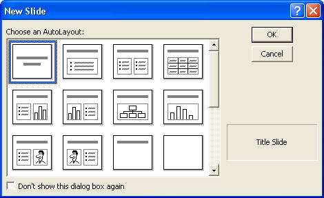 Select the first one, then click OK. PowerPoint 2003 users don't have to do anything. When you click Blank presentation, you'll see all the slide templates on the right hand side in the Task Pane. The slide you need is already displayed, but it looks like the one selected in the image above. But all PowerPoint users should now see a white screen that looks like
this: 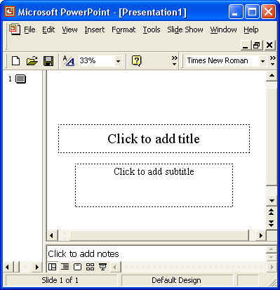 To set up a Master Slide, click View from the PowerPoint menu bar at the top. From the View menu, select Master > Slide Master: 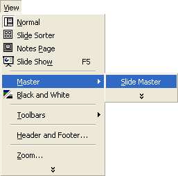 When you click Slide Master, you'll go in to a different screen. It should look like this: 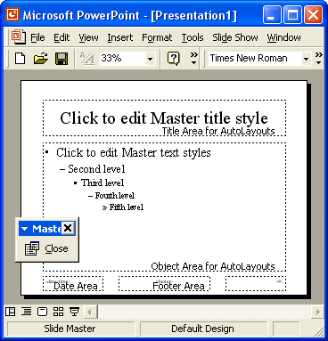 The idea is that you can edit any of these areas. When you save your work, you'll be saving a Master Slide that can be used again and again. The first thing we can do is add a background, instead of the plain
white one. So, from the PowerPoint menu, click Format. From the
Format menu, select Background: 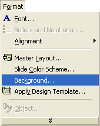 You can also right click on a plain white area (the background) to see a context menu. Again, select background. When you click Background, you'll see the following dialogue box appear: 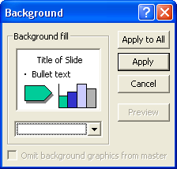
Click the arrow on the dropdown list to see the following options: 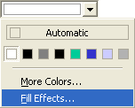 Click on Fill Effects. A new dialogue box appears. This one: 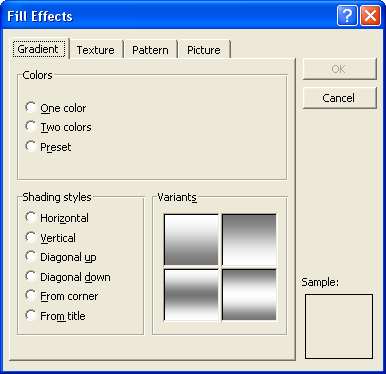 The Gradient tab is not the one we want. But it is quite a useful. Play around with the various option here, to see what they do. When you've finished experimenting, click the Picture tab at the end: 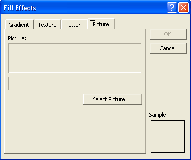 Click the Select Picture button. A standard windows dialogue box will appear. Use the Look in dropdown list, and navigate to the image files you downloaded. There should be a folder called Backgrounds. Choose the one called BlueGradient.jpg. The dialogue box will then look like this: 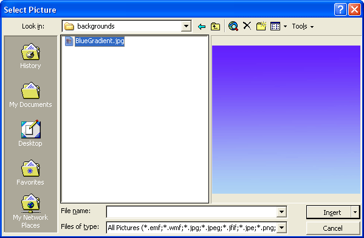 Click the Insert button to get back to the Picture tab, which should now show you a preview of the background: 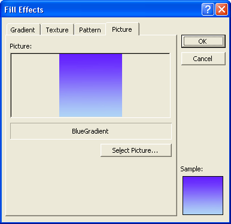 Click OK on the Fill Effects dialogue box, and you'll be back to the smaller Background dialogue box: 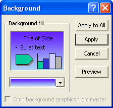 Click Apply on this dialogue box to see your new background appear on the Master Slide: 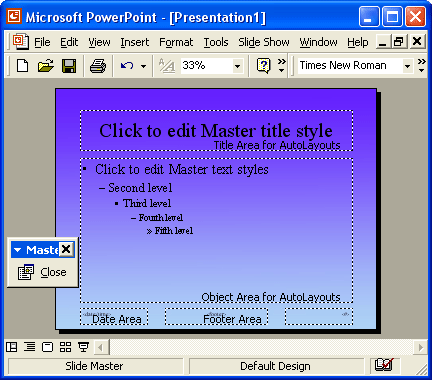 Now that we have a background, we can format the Master Slide.
|
||||